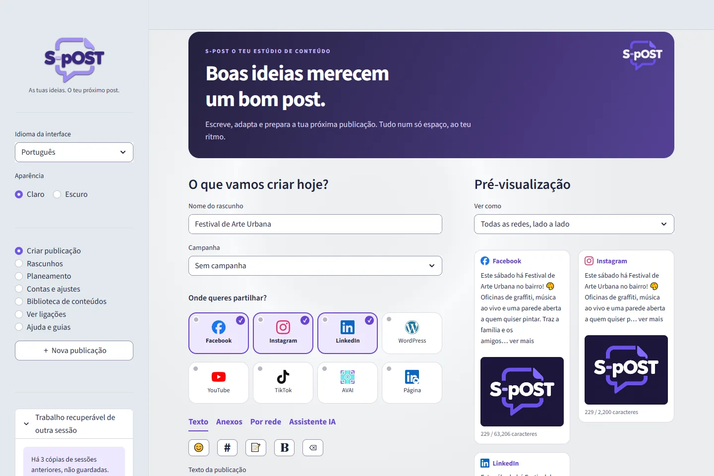
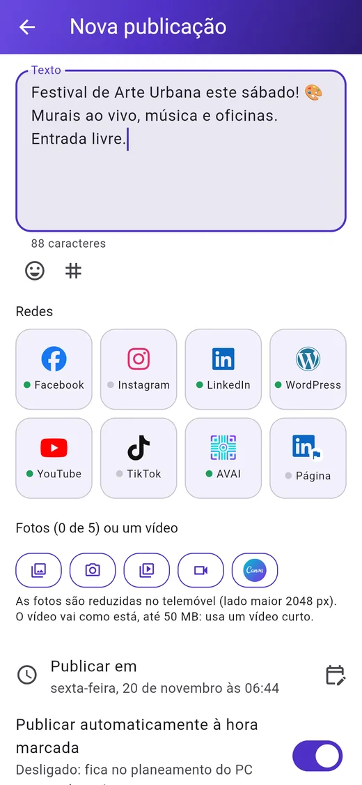
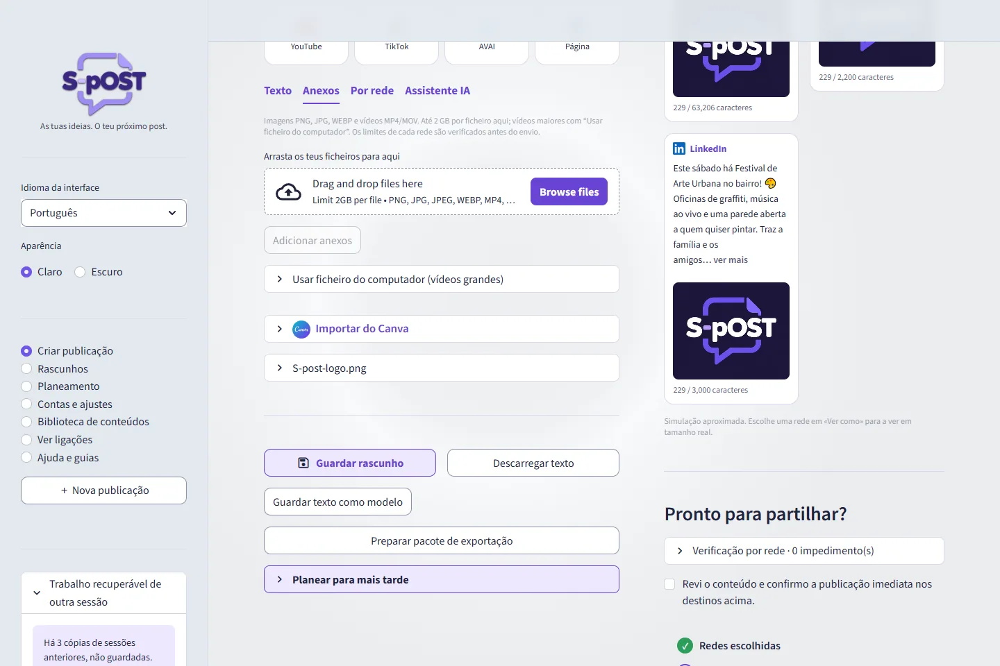
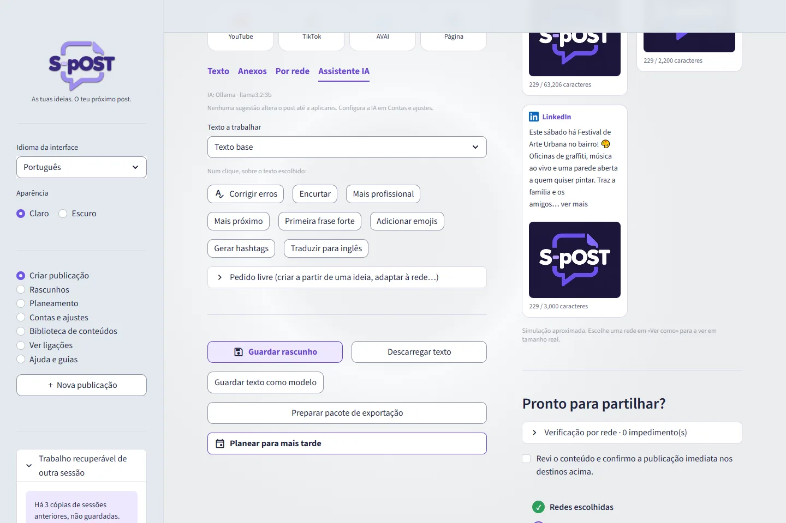
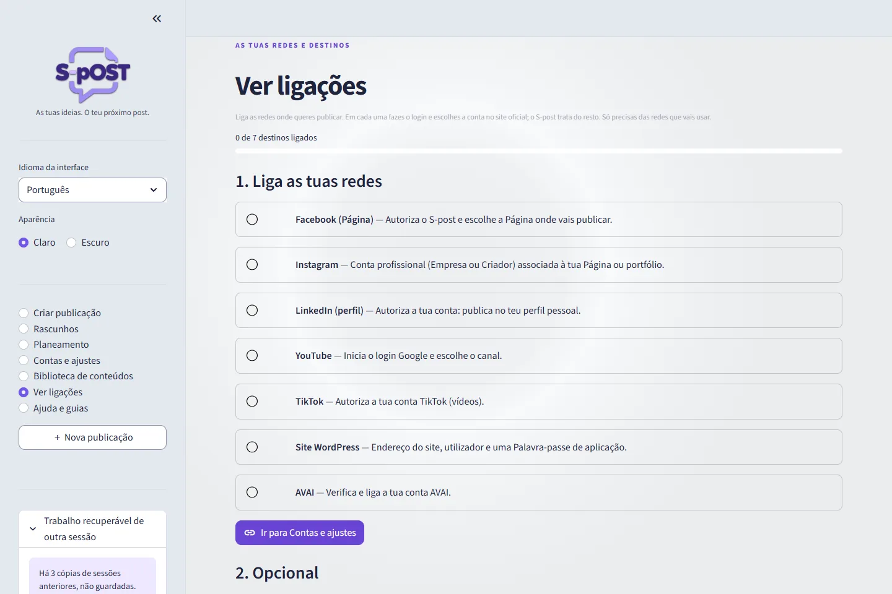
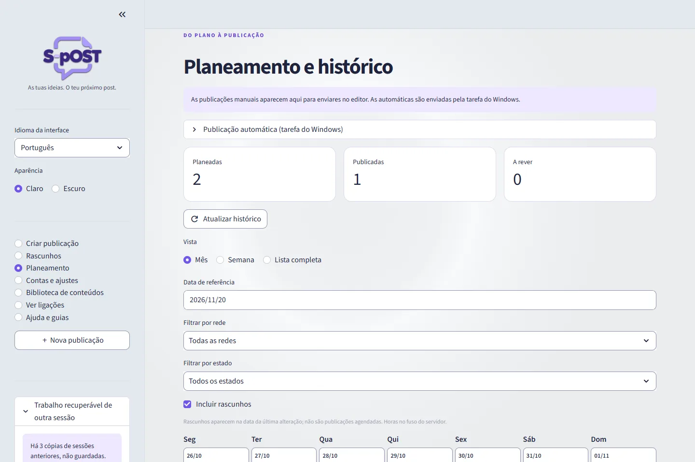
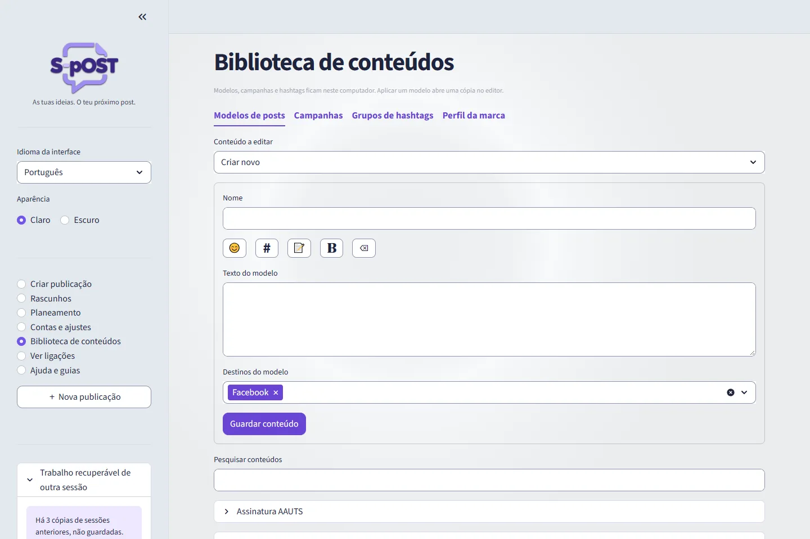
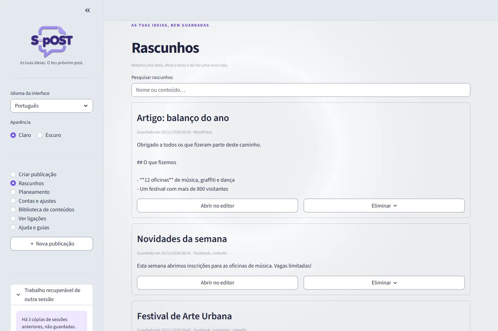

O S-post é a aplicação da AAUTS para preparar e publicar conteúdos: escreves a ideia uma vez, adaptas a cada rede e publicas — ou agendas — sempre com a tua confirmação.
O S-post é um programa para Windows 10 e 11, com uma app Android complementar (em fase final de testes, incluída na licença).
Texto base, anexos e versões por rede, com a pré-visualização de todas lado a lado.
Uma lista de passos mostra o que falta para publicar; a IA opcional corrige, encurta ou muda o tom.
Rascunhos, modelos, campanhas e calendário, com envio manual ou automático à hora marcada.
Login no site oficial de cada rede; depois confirmas a publicação, ou agendas-a como automática.

Em «Contas e ajustes → Telemóvel», lês o código com a app Android.
Texto, fotos ou vídeo, e as redes onde queres publicar.
Modo «Com o meu PC»: o computador publica por ti, à hora que escolheste.
Modo «Só no telemóvel»: publicas na hora no WordPress e no AVAI.

Escreve aqui e vê como fica em cada rede: o «ver mais», os limites de caracteres e as hashtags. Isto é só uma demonstração nesta página — nada é enviado. No S-post é a sério.
Os limites e os cortes do «ver mais» são aproximados, para a demonstração.
Sem andar de aplicação em aplicação. O trabalho fica guardado no teu computador.






Narração em português, legendas em inglês.
Cada rede aprova as apps que publicam por ti. As ligações à espera ficam ativas logo que a aprovação chegue, sem custo extra.
Texto, imagens ou um vídeo em Páginas que administras (não em perfis pessoais).
Texto, imagens ou um vídeo no teu perfil pessoal; Páginas de empresa (pedido de aprovação ao LinkedIn em curso).
Um vídeo por publicação, com título, descrição, categoria, miniatura e visibilidade escolhida. Pede apenas youtube.upload e youtube.readonly (para identificar o canal).
Texto até 300 caracteres, com links e #hashtags clicáveis, e até 4 imagens, com uma Palavra-passe de aplicação (nunca a senha da conta).
Artigos com imagens e anexos, com uma Palavra-passe de aplicação do teu site.
Texto, até 5 imagens ou um vídeo na rede AVAI, com um token de 30 dias criado por ti no AVAI.
Importa os teus designs (imagem ou vídeo) diretamente para os anexos, com o login oficial do Canva e só permissões de leitura.
Boas ideias merecem um bom post. O S-post trata do tamanho, das hashtags e do «ver mais» de cada rede — tu tratas da ideia.
Consulta a política de privacidade para conhecer os dados, o armazenamento e as opções de eliminação.
O trabalho fica no computador onde a aplicação corre (e, com a app Android, no telemóvel). As ligações ficam no Gestor de Credenciais do Windows.
As publicações viajam cifradas pelo servidor aauts.pt, que não as consegue ler e as apaga ao fim de 14 dias no máximo.
A aplicação nunca publica só por gerar uma sugestão ou ligar uma conta: cada publicação é confirmada por ti ou agendada por ti.
Escreves a ideia uma vez e o S-post ajuda-te a adaptá-la a cada rede. Guardas rascunhos, modelos e o tom de voz da tua marca, e planeias a semana no calendário.
Depois, 39 € por ano. Renovável com o mesmo código.
Uma aplicação da AAUTS para preparar e publicar conteúdos em redes sociais, no WordPress e no AVAI. Esta página apresenta a aplicação; não é uma instância pública do editor.
Para ativar e publicar, sim. Para escrever e organizar, não: funciona até 30 dias sem internet.
Sim, com a app S-post para Android, incluída na licença (até 5 telemóveis). Escolhes o modo «Com o meu PC» — escreves e agendas no telemóvel e o computador publica — ou «Só no telemóvel» — publicas na hora no WordPress e no AVAI. A app está na fase final de testes.
Só para ligar o telemóvel ao computador, e sempre cifrados (AES-256) com uma chave que fica nos teus aparelhos: o servidor da AAUTS guarda envelopes fechados que não consegue abrir, durante 14 dias no máximo. As senhas e acessos às redes nunca saem do teu computador ou telemóvel.
Sim, é opcional: Ollama ou LM Studio (gratuitos, no computador) ou uma chave tua do Gemini, ChatGPT, Claude ou DeepSeek.
Pode acontecer com programas novos: o Windows SmartScreen pode pedir confirmação. Carrega em «Mais informações» e depois em «Executar mesmo assim». Descarrega o S-post só a partir da página oficial em aauts.pt.
Um ano, renovável com o mesmo código. O S-post avisa 14 dias antes; depois do fim há 7 dias de tolerância. Os teus rascunhos e ligações nunca são apagados.
Sim. Com a licença ativa, o S-post avisa das versões novas e instala-as com um clique.
Descarrega o S-post para Windows e liga as tuas redes em minutos.